<!DOCTYPE html>
<html lang="en">

</html>

<head>
    <meta charset="UTF-8">
    <meta name="viewport" content="width=device-width, initial-scale=1.0">
    <meta http-equiv="X-UA-Compatible" content="ie=edge">
    <title>Christina Metcalfe</title>
    <script type="text/javascript" src="js/Popup.js"></script>
    <link rel="stylesheet" type="text/css" href="Views/StartPage.css">
    <link rel="stylesheet" href="https://cdnjs.cloudflare.com/ajax/libs/font-awesome/4.7.0/css/font-awesome.min.css">
    <link href="https://fonts.googleapis.com/css2?family=Neucha&family=Ubuntu&display=swap" rel="stylesheet">
</head>

<body>

    <div class="containter">
        <div class="item-header">
            <div class="grid-header">
                <div class="bg">
                    <br><br><br><br><br><br><br><br><br><br><br><br><br><br><br><br><br><br><br>
                    <br><br><br><br><br><br><br><br><br><br><br><br><br><br><br><br><br><br><br>
                    <br><br><br><br><br>
                    
                    <div class="herotext">
                        <h1>I am Christina Metcalfe</h1>
                        <h2>a team leader at Ericsson</h2>
                    </div>
                </div>
            </div>
        </div>

        <div class="item-main">
            <div class="grid-whoIam">
                <div class="item-about"></div> <!--Här kan jag skriva en rubrik om jag vill-->
            </div>
            <div class="grid-content">
                <div class="item-content">
                    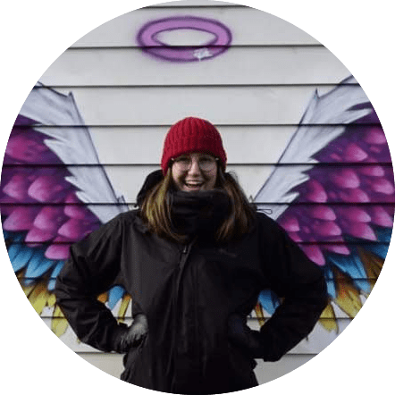
                    <!-- The Modal -->
                    <div class="modal" id="myModalme">
                        <!-- Modal content -->
                        <div class="modal-content">
                            <span class="closeme" id="close">&times;</span>
                            <div class="grid-containter-modal">
                                <div class="grid-item-modal">
                                    <h2>Who am I? </h2>
                                    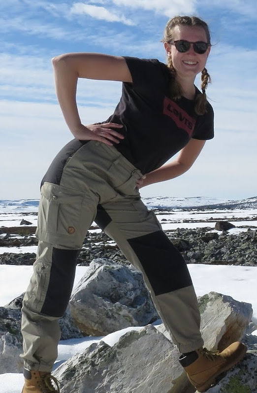
                                    <br>
                                    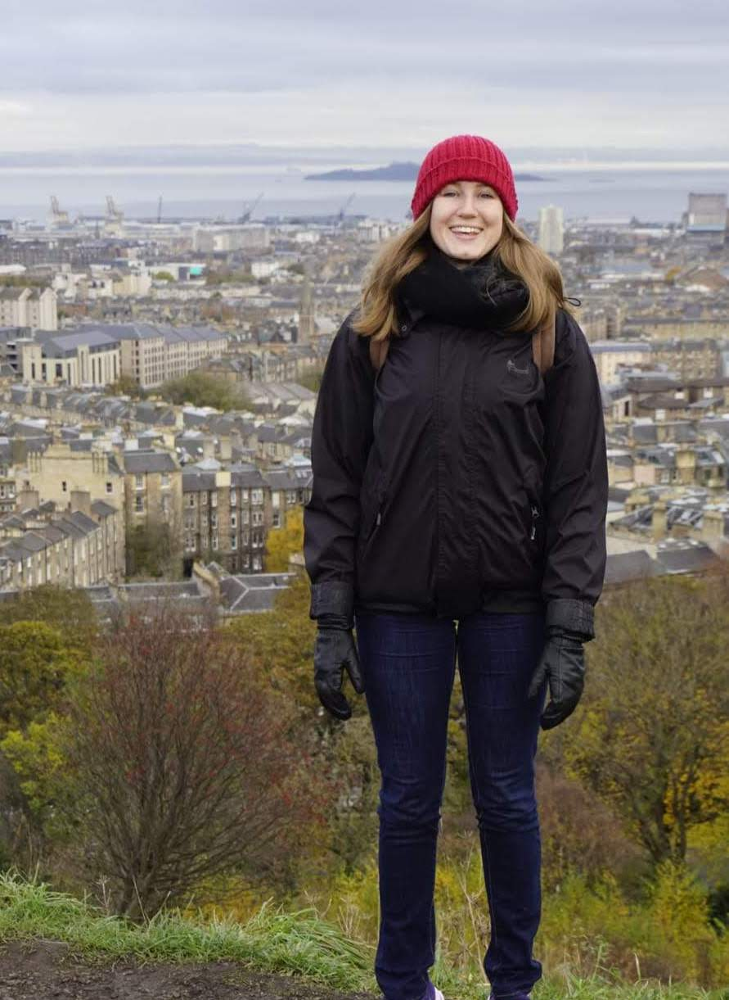
                                    <br>
                                    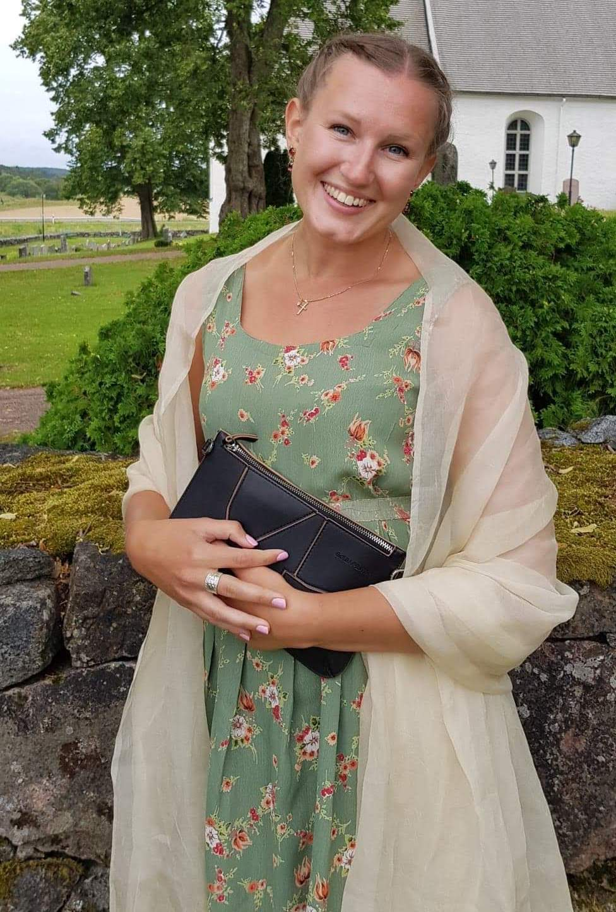
                                </div> 
                                <div class="grid-item-modal">
                                    <p>Hey! How nice of you to pop in. <br>
                                    I’m Christina Metcalfe, a team leader at Ericsson with a MSc degree in 
                                    <a target="_blank" href="https://www.umu.se/utbildning/program/civilingenjorsprogrammet-i-interaktion-och-design/">Interaction technology and Design</a> 
                                    from Umeå University. I was born in Uppsala, Sweden in 1995 and moved to Umeå to study in 2016. 
                                    I studied technical sciences in high school and during that time I was the 
                                    student ambassador for <a target="_blank" href="https://teknikcollege.se/">Teknikcollege</a> 
                                    and helped with the work to certify Fyrisskolan.  

                                    <br><br>After graduation from Fyrisskolan I spent the autumn doing a Tekniksprånget internship at SKB 
                                    (Swedish Nuclear Fuel and Waste Management Co). This is when I decided I wanted to 
                                    continue studying engineering or technical science to be able to work with developing 
                                    and making the flow of information between the humans and computer easier.  
                                    But I wasn’t ready to start studying full time quite yet, I spent three months in Visby 
                                    on Gotland reading a course in project management and leadership.  

                                    <br><br>When I moved back to Uppsala I started working at Gammadata Instrument AB as inside 
                                    sales for the laser department. I sold big laser systems to industry and universities, 
                                    travelled several times to Germany to attend courses, sales meetings and conferences. 

                                    <!--<br>During this year I also volunteered as a youth leader in a church in Knivsta, 
                                    just north of Stockholm. I helped out during the weekly evening activities and attended 
                                    camps around Sweden, England and Italy.--> 

                                    <br><br>In 2016 I decided to move to Umeå and start my MSc degree. I spent my time in 
                                    Umeå by getting involved in various projects and activities. I participated in the buddy 
                                    program as a buddy leader, working with getting international students involved in the student 
                                    life at the university. As the project leader, I planned and arranged the DataTjej Conference in 
                                    February 2019 together with 12 other students. 

                                    <br>In my fourth year I travelled to Birmingham, England for an exchange semester at Birmingham City 
                                    University (BCU). When I came back home I started working for the university as a kind of student 
                                    ambassador in parallel to my studies. My assignment was to look at how my degree and the courses it 
                                    contains can develop and ensure a high quality to keep up with the fast changing IT-industry that 
                                    the students will face once they leave university. 

                                    <!--<br><br>During the summer of 2020 I worked at Bolagsverket developing a prototype for a new function 
                                    on their webpage.--> 

                                    <br><br>I wrote my master thesis with SEB on the topic of chatbot interaction focusing on the 
                                    difference between users experiance between textbased chatbots and voice assistants. 
                                    The thesis had the title "Chatbot or voice assistant in a help desk application?: A study of users’ experiences and preferences".
                                    
                                    <!--<br><a id="email" href="mailto:christina.metcalfe@outlook.com? subject=subject text">
                                        christina.metcalfe@outlook.com</a>-->
                                    </p>
                                </div>
                            </div> 
                        </div>            
                    </div>
                </div>
                <div class="item-content">
                    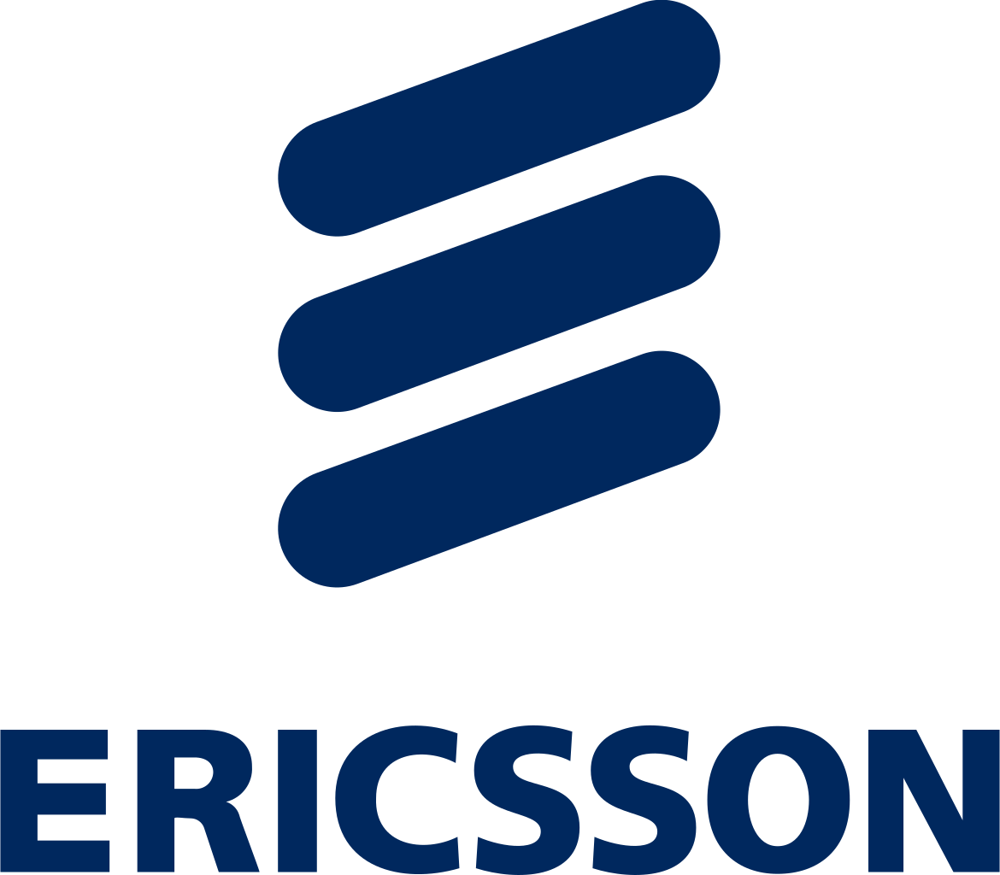
                    <!-- The Modal -->
                    <div class="modal" id="myModalericsson">
                        <!-- Modal content -->
                        <div class="modal-content">
                            <span class="closeericsson" id="close">&times;</span>
                            <div class="grid-containter-modal">
                                <div class="grid-item-modal">
                                    <h2>Team Leader at Ericsson</h2>
                                    
                                </div>
                                <div class="grid-item-modal">        
                                    <p>I started working at Ericsson in August 2021 as a developer and tester
                                        of radio hardware focusing on the rolleout of 5G. 
                                        <br>Early on I had a discussion with my boss about stepping into the role of team 
                                        leader, but I wanted to get comfortable with the way of working with the team first. 
                                        In January 2021 my wishes became reality and I became team leader for the team. 
                                        <br><br>As team leader I work with planning and distributing the incomning
                                        projects to ensure a healthy and fair distribution across the team. I'm also involves
                                        in a group looking at Improvements and Impediments to create a better and more 
                                        efficient way forward. Being able to switch focus between the big picture and details in 
                                        specific projects has proved to be a very useful skill one that I have developed through
                                        earlier experiences in and outside school. There are often lots of projets and questions 
                                        to be handled but this is something I am comfortable with thanks to my ability to structure
                                        and plan my time. 
                                        <br><br>One of the most valuable lessons I've learned at Ericsson is to use the 
                                        competence around me, ask for help when needed instead of getting stuck on a task, 
                                        it is impossible for one person to do it all, this is what teamwork is all about and 
                                        I am very fortunate to be a part of a team where asking questions and helping each other 
                                        is part of every day activities. </p>
                                </div>
                            </div>
                        </div>
                    </div>
                </div>
                <div class="item-content">
                    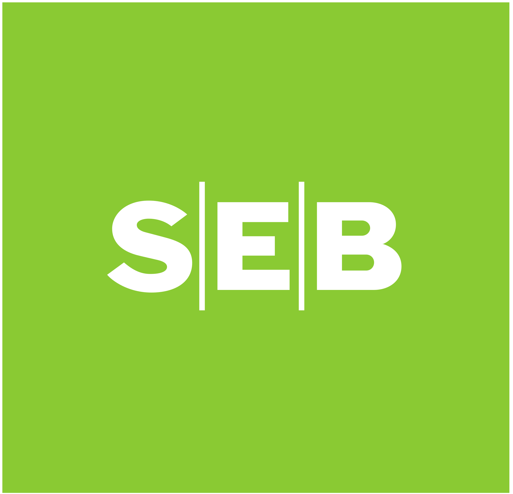
                    <!-- The Modal -->
                    <div class="modal" id="myModalthesis">
                        <!-- Modal content -->
                        <div class="modal-content">
                            <span class="closethesis" id="close">&times;</span>
                            <div class="grid-containter-modal">
                                <div class="grid-item-modal">
                                    <h2>Master thesis with SEB</h2>
                                    <p><br>Chatbot or voice assistant in a help desk application?: 
                                        <br>A study of users’ experiences and preferences</p>
                                            
                                            <br><br>To download my thiesis visit <a
                                            href="https://www.diva-portal.org/smash/record.jsf?dswid=-9700&pid=diva2%3A1574322&c=2&searchType=SIMPLE&language=en&query=christina+metcalfe&af=%5B%5D&aq=%5B%5B%5D%5D&aq2=%5B%5B%5D%5D&aqe=%5B%5D&noOfRows=50&sortOrder=author_sort_asc&sortOrder2=title_sort_asc&onlyFullText=false&sf=all" target="_blank">the diva-portal</a></p>
                                        </div>
                                <div class="grid-item-modal">
                                    <p>
                                        My master thesis aimed to investigate which help desk support task would benefit from being implemented 
                                        in a VUI (voice user interface). Research on the topic was conducted and a prototype was build and tested on a target audience. 
                                        The results from a user study were evaluated and conclusions were drawn about which tasks are best suited for being handled by 
                                        a digital voice assistant. 
                                        <br><br>Two kinds of help desk tasks were evaluated in a user study to compared users experience of the current text based digital assistant 
                                        with a prototype of a voice based assistant. The aim of the user study was to find which task would benefit from becoming voice based 
                                        by looking at users acceptance level and over all experience. 
                                        <br><br>The results from the user study show that employees who use the current text based assistant for help desk tasks, will not choose to 
                                        speak to a digital voice assistant because they are happy with the service available today. However, employees who don’t use the current 
                                        text based assistant, will find the digital voice assistant useful. It was also found that short executing tasks such as unlocking accounts, 
                                        are a better fit for the VUI compared to longer interactions providing information. 
                                        <br><br>Two conclusions were drawn, peoples’ preferences are 
                                        different, meaning that it should be possible to interact with both a text based and voice based assistant when performing help desk tasks. 
                                        <br>Secondly, the voice based assistant should be implemented as a function in the help desk phone queue instead of being implemented in a browser. 
                                        Because the users argued that they would be more comfortable speaking to a phone then to a screen.  
                                        
                                </div>
                            </div> 
                        </div>
                    </div>
                </div>
                <div class="item-content">
                    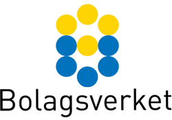
                    <!-- The Modal -->
                    <div class="modal" id="myModalbverket">
                        <!-- Modal content -->
                        <div class="modal-content">
                            <span class="closebverket" id="close">&times;</span>
                            <div class="grid-containter-modal">
                                <div class="grid-item-modal">
                                    <h2>Bolagsverket</h2>
                                    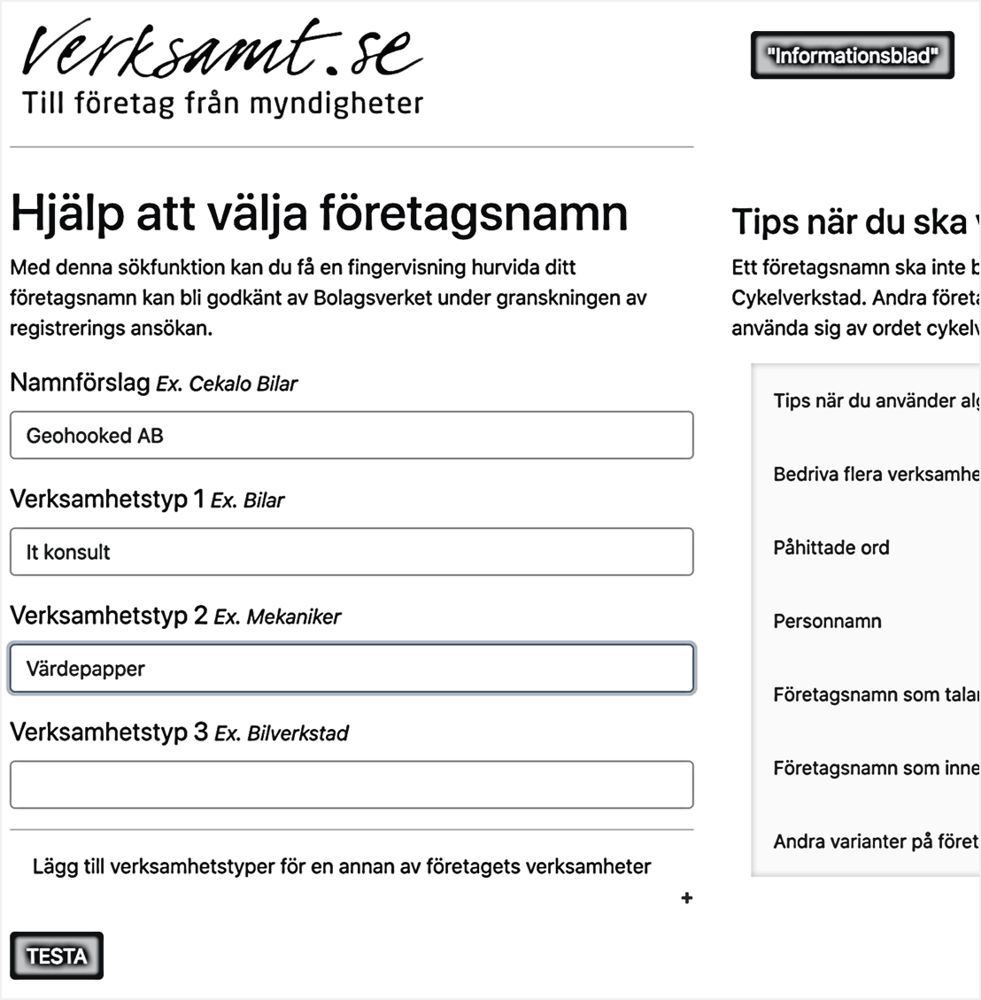
                                    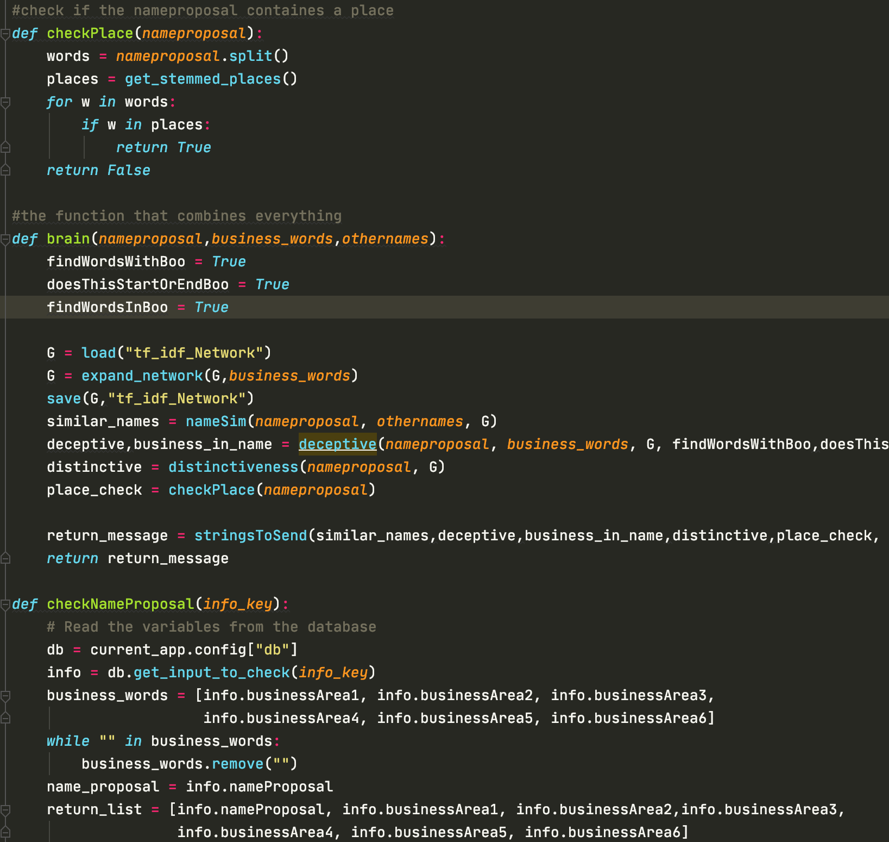
                                </div>
                                <div class="grid-item-modal">        
                                    <p>During the summer of 2020 I was employed at Bolagsverket 
                                        and enrolled in Mid Sweden university’s (Mittuniversitetet, MIUN) 
                                        summer internship. For nine weeks I participated in a course given by 
                                        MIUN called Practice in design thinking giving us tools for 
                                        creative thinking and evaluation methods. <br><br>I was at the same time 
                                        working full time at Bolagsverket developing a prototype for a new function 
                                        on their webpage. The aim of the project at Bolagsverket was to 
                                        find a way to help customers choose a suitable company name.
                                        <br><br>The project involved developing and teaching an AI to determine 
                                        if two company names were too similar and building a network of 
                                        business words to determine if the business description and the 
                                        company name could be considered similar. All this was then 
                                        connected to a GUI (graphical user interface) to make it possible 
                                        for users to evaluate the prototype.</p>
                                </div>
                            </div>
                        </div>
                    </div>
                </div>
                <div class="item-content">
                    
                    <!-- The Modal -->
                    <div class="modal" id="myModalumu">
                        <!-- Modal content -->
                        <div class="modal-content">
                            <span class="closeumu" id="close">&times;</span>
                            <div class="grid-containter-modal">
                                <div class="grid-item-modal">
                                    <h2>What I've done at <br>Umeå University</h2>
                                    
                                </div>
                                <div class="grid-item-modal">
                                    <p>This is where I spent 5 years learning how humans interact 
                                        with computers and robots, how AI is the future, build full stack systems, 
                                        construct efficient databases, learnt every word of the mean value theorem 
                                        and also forgotten most of it, studied for exams, held presentations just 
                                        like everyone else in my class. <br></br>But I have also done things they haven’t. 
                                        I spent a semester as a buddy leader in the Buddy Program, taking care of 
                                        international students who arrive in Umeå. We spent at least two night a week 
                                        playing games, cooking, exercising together to help them adapt to life in Umeå 
                                        and creating a place where they could feel like they belonged. 
                                        <br></br>In my fourth year I worked for my department at the university, 
                                        evaluating my program and the courses it contains. To make sure the education 
                                        we offer the students has a high quality and is up to date with the fast evolving 
                                        tech-industry. </p>
                                </div>
                            </div>
                        </div>
                    </div>
                </div>
                <div class="item-content">
                    
                    <!-- The Modal -->
                    <div class="modal" id="myModalbcu">
                        <!-- Modal content -->
                        <div class="modal-content">
                            <span class="closebcu" id="close">&times;</span>
                            <div class="grid-containter-modal">
                                <div class="grid-item-modal">
                                    <h2>Exchange semster at BCU</h2>
                                    
                                    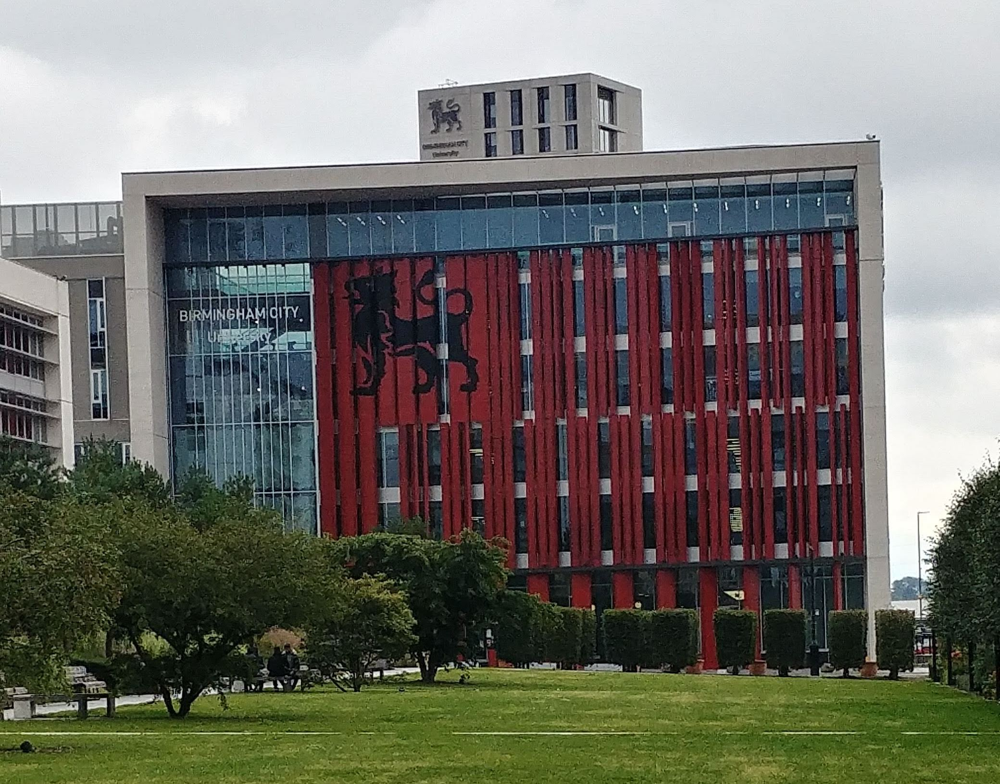
                                </div>
                                <div class="grid-item-modal">
                                    <p>To broaden my degree and learn something other than developing IT solutions 
                                        I spent the autumn of 2019 at BCU studying PR and event management at the 
                                        school of media. This was a really good experience and I got a whole new 
                                        perspective on how the marketing industry works and how I can use the 
                                        tools I learnt to my advantage. 
                                        <br>Living in England has always been something I’ve wanted to do to be 
                                        closer to my English relatives and also see what day-to-day life in 
                                        England would be like. Living in Birmingham was better than I had 
                                        imagined and I definitely want to move back there for a few years one day. 
                                        <br>I lived in an international flat with students from all over the world 
                                        so even if I lived in England it felt like I was traveling the world and 
                                        meeting all of these interesting cultures. Spending a semester abroad and 
                                        studying something outside my degree was a great experience and I would 
                                        recommend everyone given that opportunity to take it.</p>
                                </div>
                            </div>
                        </div>
                    </div>
                </div>
                <div class="item-content">
                    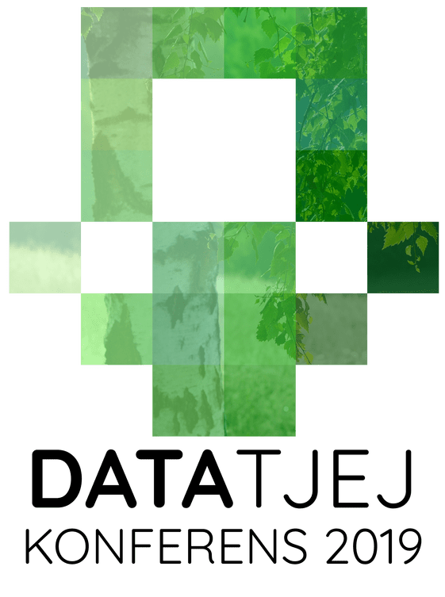
                    <!-- The Modal -->
                    <div class="modal" id="myModaldatatjej">
                        <!-- Modal content -->
                        <div class="modal-content">
                            <span class="closedatatjej" id="close">&times;</span>
                            <div class="grid-containter-modal">
                                <div class="grid-item-modal">
                                    <h2>Project manager for the DataTjej Conference 2019</h2>
                                    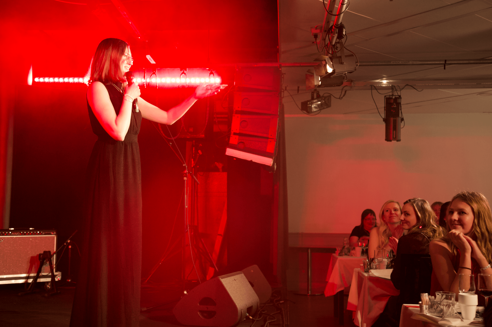
                                    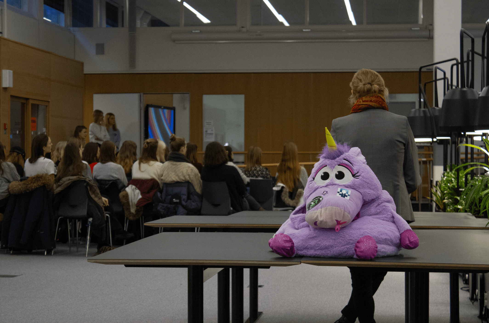
                                    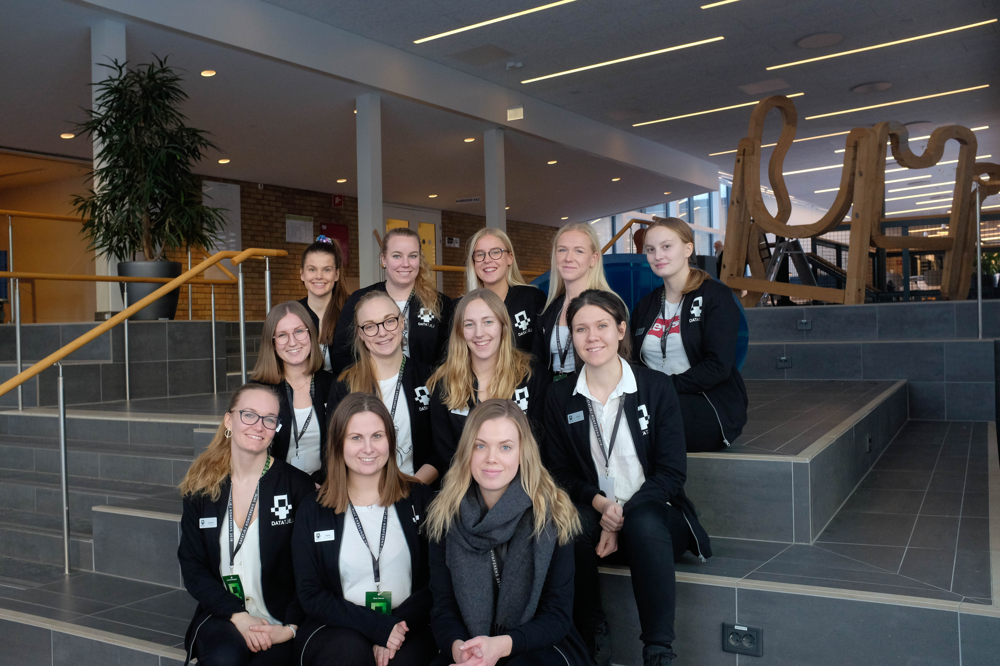
                                    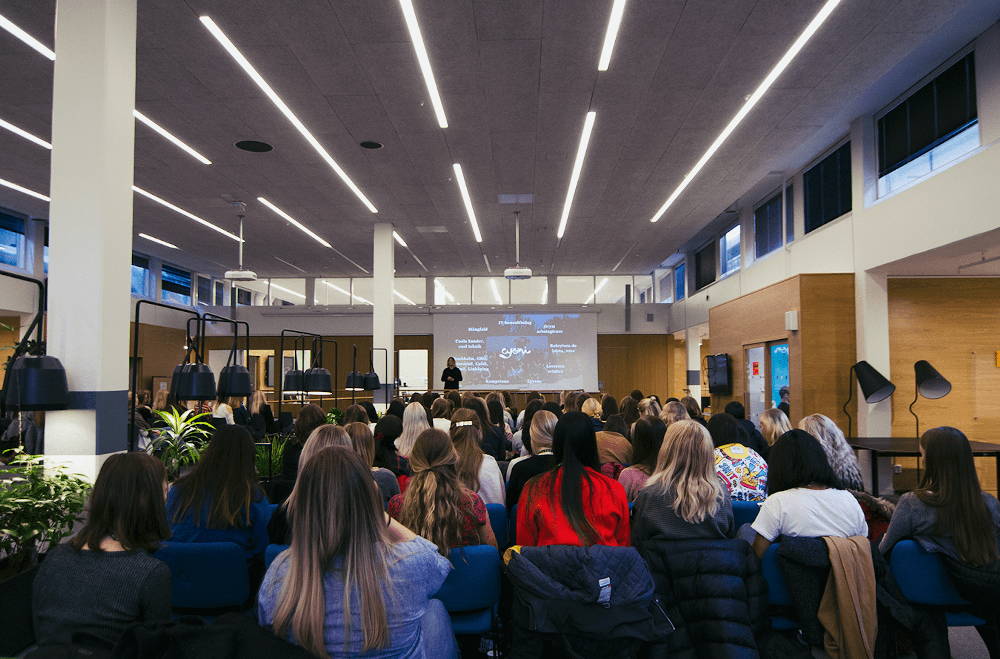
                                </div>
                                <div class="grid-item-modal">
                                    <p>DataTjej is a non-profit organization working to promote women and non-binary people of
                                        all ages who are interested in, studying or working with IT.
                                        DataTjej is probably best known for the annual DataTjej Conference, where companies and
                                        students get the opportunity to network.<br><br>
                                        In 2019 the conferance was held in Umeå and I was the project manager and together with
                                        a team om 12 women we planned and delivered a three day long conference.<br><br>
                                        We spent nine months planning the conference, booking accommodation, planning evening activities, 
                                        contacting companies, booking speakers, recruiting volunteers, inviting participants and getting 
                                        the trade fair sorted. <br><br>I spent at least two hours a day preparing our weekly meetings, sending 
                                        emails and making sure my team knew what to do and things ran smoothly. Working with this project has been 
                                        one of the best experiences I have ever had, I learnt so much about what it means to be a leader 
                                        and what it is like to run a real project. 
                                        <br><br>For more information on what DataTjej do, visit their website <a
                                            href="https://datatjej.se/">DataTjej.se</a></p>
                                </div>
                            </div> 
                        </div>
                    </div>
                </div>
                <div class="item-content">
                    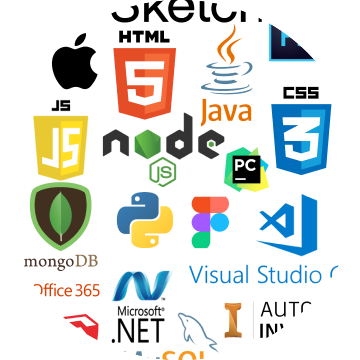
                    <!-- The Modal -->
                    <div class="modal" id="myModalskills">
                        <!-- Modal content -->
                        <div class="modal-content">
                            <span class="closeskills" id="close">&times;</span>
                            <div class="grid-containter-modal">
                                <div class="grid-item-modal">
                                    <h2>What can I do?</h2>
                                    
                                </div>
                                <div class="grid-item-modal">
                                    <p>My degree has given me a broad understanding of what working within IT could be like. 
                                        I have developed backend systems and programs in C, Python and Java and built a 
                                        simple AI that was taught to identify emotions from images of simple smiley faces. 
                                        From AI the step to robots seemed natural so I did a course in robot interaction, 
                                        roboethics and NLP (natural language processing). 
                                        <br><br> I’ve also done some full-stack development in Node.js with MySQL and MogoDB 
                                        database structures. This backend was in turn connected to a GUI (graphical user interface) 
                                        with HMTL, CSS and JS to make the information available for the user and increase the 
                                        interaction. 
                                        <br><br>Other than the technical stuff I’ve also learnt how design processes work, 
                                        how to develop an idea to a finished prototype, product or concept. I’ve done a sustainable 
                                        environment course and two project management courses. 
                                        </p>
                                </div>
                            </div>
                        </div>
                    </div>
                </div>
                <div class="item-content">
                    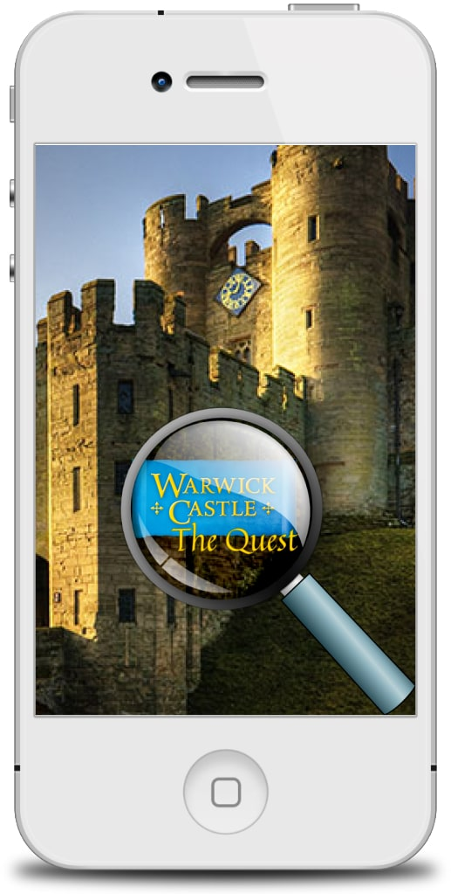
                    <!-- The Modal -->
                    <div class="modal" id="myModalwarwick">
                        <!-- Modal content -->
                        <div class="modal-content">
                            <span class="closewarwick" id="close">&times;</span>
                            <div class="grid-containter-modal">
                                <div class="grid-item-modal">
                                    <h2>AR game for Warwick Castle</h2>
                                    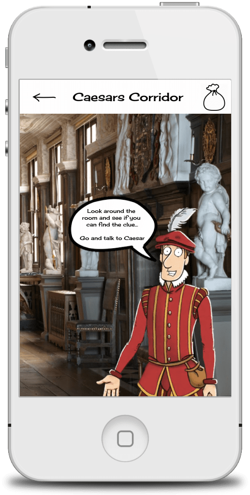
                                    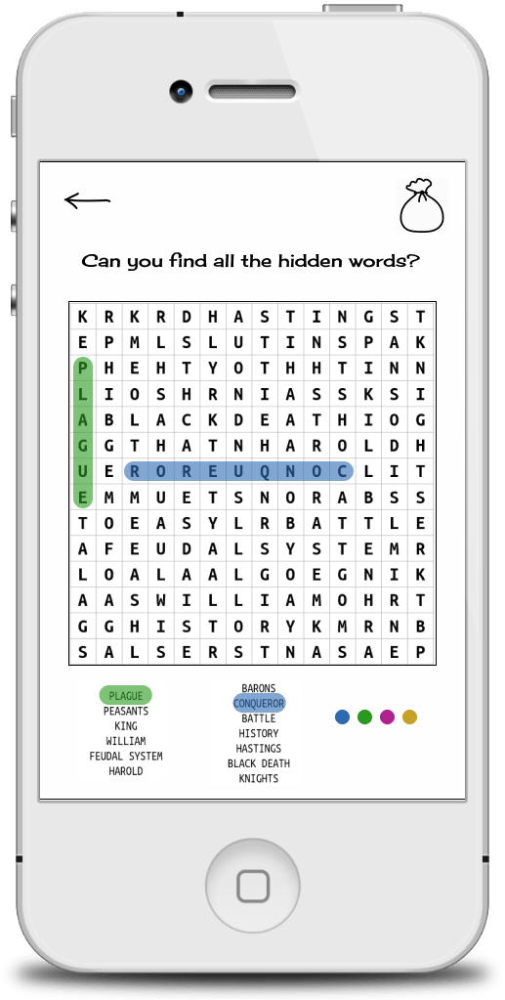 
                                     
                                </div>
                                <div class="grid-item-modal">
                                    <p>Warwick Castel is an attraction in the midlands, England, perfect for families days out. 
                                        There are a lot of activities to participate in and shows to watch. <br>But as we are 
                                        heading towards a digital era they wanted a virtual adventure for the children to 
                                        use on site but also at home to collect points to prepare for their next visit. 
                                        <br><br>I put together a prototype visualising an interactive app with an augmented reality approach 
                                        to get the children to run around the castle and fulfil the adventure. The prototype 
                                        also contained mini-games for the children to play at home to collect points or 
                                        knowledge to use the next time they visit Warwick Castle. </p>
                                </div>
                            </div>
                        </div>
                    </div>
                </div>
                <div class="item-content">
                    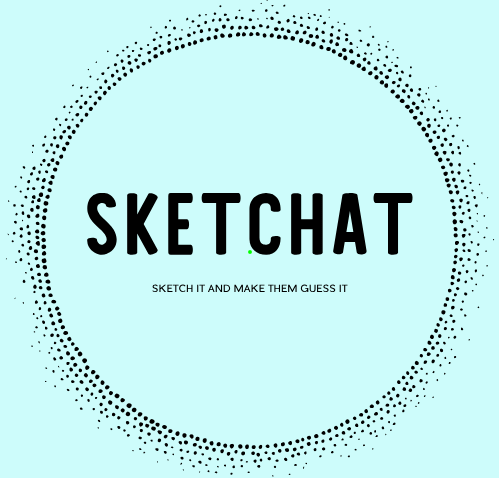
                    <!-- The Modal -->
                    <div class="modal" id="myModalsketchat">
                        <!-- Modal content -->
                        <div class="modal-content">
                            <span class="closesketchat" id="close">&times;</span>
                            <div class="grid-containter-modal">
                                <div class="grid-item-modal">
                                    <h2>Sketchat - the new pictionary game</h2>
                                    
                                    <br>
                                    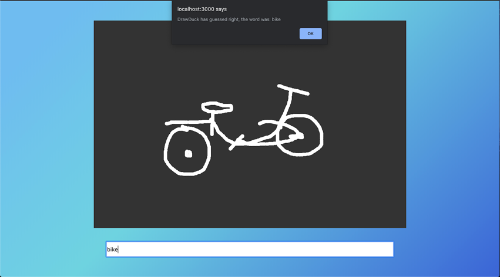
                                </div>
                                <div class="grid-item-modal">        
                                    <p>This is one of my school assignments. It’s a full-stack game 
                                        where you can challenge your friends to the classic game of 
                                        Pictionary. It works on separate computers and the words are 
                                        selected randomly from a database. 
                                        <br><br>The program uses the js-library p5.js to enable drawing 
                                        the images and sending them to the other 
                                        players on the same network. <br>There is also a chat where the 
                                        participants can guess the right answer and also interact with each other. 
                                        The data is sent over a local network through sockets, Socket.IO is used in this case. 
                                        The server talks to the database through an API and the server in tern talks to the clients. 
                                        <br><br>You can download the source code from <a href="https://github.com/amandaengstrm/Sketchat.git">Github</a>. 
                                        But at the moment you need to create your own database with words and connect 
                                        it to the game for it to work.</p>
                                </div>
                            </div>
                        </div>
                    </div>
                </div>
                
                <div class="item-content">
                    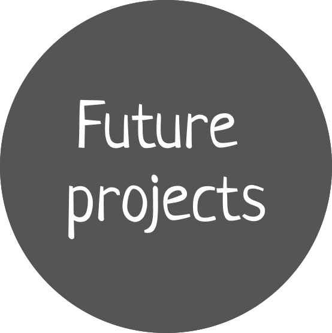
                </div>
                <div class="item-content">
                    
                </div>
            </div>
        </div>
        <hr>
        <div class="item-footer">
            <div class="grid-footer">
                <div class="item-footer-content">
                    <p>Stay in touch</p>
                </div>
                <div class="item-footer-content">
                    <p>+46 706 59 56 86</p>
                </div>
                <div class="item-footer-content">
                    <a id="email" href="mailto:christina.metcalfe@outlook.com? subject=subject text">
                        christina.metcalfe@outlook.com</a>
                </div>
                <div class="item-footer-content">
                    <a href="images/CV Christina Metcalfe.pdf" download>
                        <input type="button" id="downloadbutton" value="Download my CV"></a>
                </div>
                <div class="item-footer-content"></div>
                <div class="item-footer-content">
                    <a href="https://join.skype.com/invite/hcLWOB9K75m5" target="_blank" class="fa fa-skype"></a>
                    <a href="https://se.linkedin.com/in/christina-metcalfe-ab7551100" target="_blank" class="fa fa-linkedin"></a>
                    <a href="https://www.instagram.com/christinamajken/" target="_blank" class="fa fa-instagram"></a>
                    <a href="https://www.facebook.com/christina.metcalfe.9" target="_blank" class="fa fa-facebook"></a>
                   </div>
            </div>
        </div>

    </div>
</body>